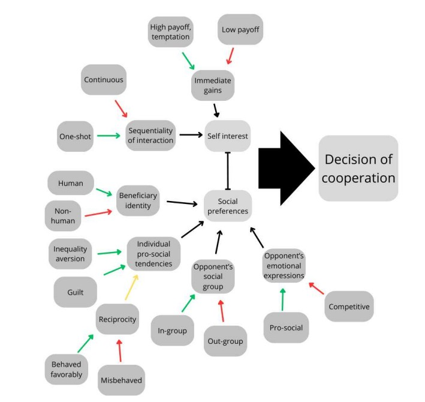

A conceptual framework to evaluate economic decision-making in Human-Computer Interaction
As a part of my bachelor's thesis, I developed a framework to evaluate decision-making in economic games. The framework differed from pre-existing frameworks in that it considered interactions with non-human agents, such as AI players. My thesis as a whole considered the use of game-theory as a tool to evaluate economic decision-making in Human-Computer Interaction.
